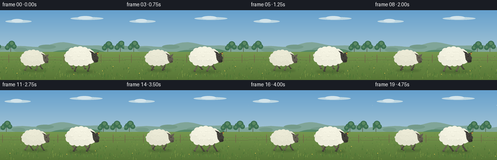
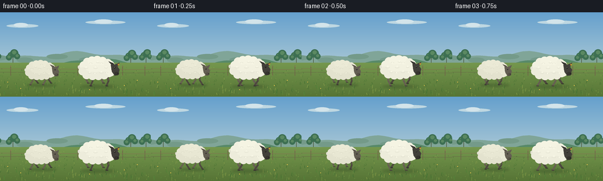

CODING AGENTS AS PIXEL WORLD MODELS
traex/GPT-5.6-Sol · instance_preservation_0016
点击播放 · 原生 RGB 像素
逐轮保存的候选
回放视频、检查图与代码变化。
每份候选均可单独播放。实际图片检查记录在下方工具轨迹中。
候选 01播放与检查图
点击播放 · 原生 RGB 像素


展开代码变化
--- 上一保存版本
+++ 本次保存版本
@@ -0,0 +1,263 @@
+from pathlib import Path
+import json, math
+import numpy as np
+from PIL import Image, ImageDraw, ImageFilter
+import artifact_io
+
+# Deterministic, hand-rendered pastoral animation. All geometry is rendered at
+# 4x resolution and reduced with Lanczos filtering for clean organic edges.
+CASE_DIR = Path(__file__).resolve().parent
+SPEC = json.loads((CASE_DIR / "task_spec.json").read_text())
+W, H = int(SPEC["width"]), int(SPEC["height"])
+N, FPS = int(SPEC["frames"]), float(SPEC["fps"])
+SS = 4
+SW, SH = W * SS, H * SS
+rng = np.random.default_rng(1616)
+
+# Fixed world-space decorative data, so scenery scrolls coherently.
+grass = []
+for _ in range(460):
+ x = float(rng.uniform(-60, 390)); y = float(rng.uniform(98, 143))
+ length = float(rng.uniform(1.0, 5.0)) * (0.45 + (y - 95) / 48)
+ slant = float(rng.uniform(-1.3, 1.3))
+ tone = int(rng.integers(0, 5))
+ grass.append((x, y, length, slant, tone))
+
+field_specks = [(float(rng.uniform(-40, 350)), float(rng.uniform(89, 142)),
+ float(rng.uniform(.25, 1.0)), int(rng.integers(0, 4))) for _ in range(260)]
+
+
+def sc(v):
+ if isinstance(v, tuple): return tuple(int(round(q * SS)) for q in v)
+ return int(round(v * SS))
+
+
+def poly(draw, pts, fill):
+ draw.polygon([(sc(x), sc(y)) for x, y in pts], fill=fill)
+
+
+def ellipse(draw, box, fill, outline=None, width=1):
+ draw.ellipse(sc(box), fill=fill, outline=outline, width=sc(width) if outline else 1)
+
+
+def line(draw, pts, fill, width=1):
+ draw.line([(sc(x), sc(y)) for x, y in pts], fill=fill, width=max(1, sc(width)), joint="curve")
+
+
+def background(frame):
+ t = frame / (N - 1)
+ yy = np.linspace(0, 1, SH, dtype=np.float32)[:, None]
+ # Clear blue morning sky grading into warm haze at the horizon.
+ top = np.array([101, 160, 205], np.float32)
+ hor = np.array([208, 222, 218], np.float32)
+ sky = top[None, None, :] * (1 - yy[:, :, None]) + hor[None, None, :] * yy[:, :, None]
+ sky = np.repeat(sky, SW, axis=1)
+ im = Image.fromarray(np.uint8(np.clip(sky, 0, 255)), "RGB")
+ d = ImageDraw.Draw(im)
+ cam = 25.0 * t
+
+ # High, wispy clouds (not sheep-like, deliberately elongated and faint).
+ for cx, cy, rx in [(38, 23, 27), (179, 17, 34), (282, 31, 24)]:
+ x = cx - cam * .12
+ ellipse(d, (x-rx, cy-3, x+rx, cy+3), (190, 215, 225))
+ ellipse(d, (x-rx*.55, cy-5, x+rx*.35, cy+2), (211, 228, 234))
+
+ # Far hills with atmospheric layers.
+ far = []
+ for x in range(-80, 361, 4):
+ y = 72 + 4.0*math.sin((x+cam*.18)/29) + 2.2*math.sin((x+17)/13)
+ far.append((x, y))
+ poly(d, far + [(360, 101), (-80, 101)], (128, 165, 152))
+ # dappled patches on far slope
+ for x, y, rx in [(-5,75,19),(42,79,14),(97,73,18),(158,78,24),(225,74,16),(290,78,23)]:
+ xx=x-cam*.3
+ ellipse(d, (xx-rx, y-2, xx+rx, y+7), (116,154,137))
+
+ near = []
+ for x in range(-80, 371, 3):
+ y = 86 + 5.5*math.sin((x+cam*.5)/36) + 1.8*math.sin(x/11)
+ near.append((x, y))
+ poly(d, near + [(370, 110),(-80,110)], (87, 137, 105))
+
+ # Small distant copses, shifted by parallax.
+ for wx, base, size in [(-10,87,10),(22,87,8),(222,88,11),(248,87,8),(318,89,12)]:
+ x = wx - cam*.62
+ line(d, [(x,base),(x,base-13)], (79,91,65), 1.1)
+ for ox, oy, rr in [(-4,-14,5),(2,-17,7),(7,-12,5),(-7,-10,5)]:
+ ellipse(d, (x+ox-rr,base+oy-rr,x+ox+rr,base+oy+rr), (61,111,82))
+ ellipse(d, (x+ox-rr*.5,base+oy-rr*.7,x+ox+rr*.5,base+oy+rr*.25), (91,137,98))
+
+ # Meadow base: vertical, sunlit olive-green gradient.
+ for y in range(sc(86), SH):
+ q = (y/SS - 86) / (H-86)
+ col = (int(117-31*q), int(151-35*q), int(78-25*q))
+ d.line([(0,y),(SW,y)], fill=col)
+
+ # A quiet fence in the middle distance reinforces lateral movement.
+ fence_col = (111, 105, 72)
+ for wx in range(-20, 341, 38):
+ x = wx - cam*.9
+ line(d, [(x,91),(x,108)], fence_col, 1.3)
+ line(d, [(x-1,92),(x+2,92)], (145,132,89), .65)
+ line(d, [(-30-cam*.9,96),(360-cam*.9,98)], (126,119,79), 1.0)
+ line(d, [(-30-cam*.9,102),(360-cam*.9,104)], (101,100,68), .8)
+
+ # Persistent meadow texture in world coordinates.
+ palette = [(95,130,62),(108,143,68),(129,157,77),(76,116,58)]
+ for wx, y, r, k in field_specks:
+ x = wx - cam
+ if -2 < x < W+2:
+ ellipse(d, (x-r,y-r*.35,x+r,y+r*.35), palette[k])
+ gp = [(67,108,49),(78,124,55),(105,144,67),(138,160,74),(91,135,60)]
+ for wx, y, leng, slant, tone in grass:
+ x = wx - cam
+ if -3 < x < W+3:
+ line(d, [(x,y),(x+slant,y-leng)], gp[tone], .55 if y<120 else .75)
+
+ # Sparse tiny yellow meadow flowers, never clustered into animal shapes.
+ for wx, y in [(13,119),(35,130),(211,125),(233,116),(278,136),(304,111),(152,132)]:
+ x=wx-cam
+ line(d, [(x,y+2),(x,y)], (72,112,51), .55)
+ ellipse(d,(x-.7,y-.7,x+.7,y+.7),(226,192,76))
+ return im
+
+
+def limb(draw, hip, foot, scale, rear=False):
+ """Two-segment ovine leg with a slight backward knee/hock."""
+ hx, hy = hip; fx, fy = foot
+ # Bending side follows where the foot is relative to hip.
+ bend = -2.6*scale if fx >= hx else 2.8*scale
+ kx = hx + (fx-hx)*.47 + bend
+ ky = hy + (fy-hy)*.53
+ dark = (77,72,62) if not rear else (102,96,80)
+ hi = (112,105,89) if not rear else (127,119,98)
+ line(draw, [(hx,hy),(kx,ky),(fx,fy-1.0*scale)], dark, 3.3*scale)
+ line(draw, [(hx+.55*scale,hy),(kx+.35*scale,ky-.3*scale)], hi, .75*scale)
+ # neat split-looking hoof
+ hoof = (55,53,47) if not rear else (71,68,58)
+ poly(draw, [(fx-1.7*scale,fy-1.6*scale),(fx+2.5*scale,fy-1.0*scale),
+ (fx+2.9*scale,fy+.3*scale),(fx-1.3*scale,fy+.45*scale)], hoof)
+
+
+def sheep(im, cx, ground, scale, phase, fleece, face, tag=False, flip_detail=False):
+ """Render one persistent side-view sheep in a natural walking pose."""
+ d = ImageDraw.Draw(im)
+ bob = .85 * scale * math.sin(phase*2 + .4)
+ cy = ground - 28*scale + bob
+ # soft contact shadow
+ shadow = Image.new("RGBA", im.size, (0,0,0,0))
+ sd = ImageDraw.Draw(shadow)
+ sd.ellipse(sc((cx-27*scale,ground-2.1*scale,cx+34*scale,ground+3.3*scale)), fill=(35,57,31,65))
+ shadow = shadow.filter(ImageFilter.GaussianBlur(sc(2.0*scale)))
+ im.paste(shadow, (0,0), shadow)
+ d = ImageDraw.Draw(im)
+
+ # Four legs. Far pair first and lighter; diagonally opposed gait.
+ hips = [-16,-9,10,18]
+ offs = [math.pi, 0, math.pi, 0]
+ for j in [0,2,1,3]:
+ hp = phase + offs[j]
+ # broad fore/aft sweep; raised only during forward-moving swing half.
+ sx = 6.2*scale*math.sin(hp)
+ lift = max(0.0, math.cos(hp))*5.0*scale
+ hipx = cx + hips[j]*scale
+ footx = hipx + sx
+ footy = ground - lift
+ limb(d, (hipx, cy+8.0*scale), (footx,footy), scale, rear=(j in (0,2)))
+
+ # Tail behind the body, gently flicking.
+ tail_y = cy - 5*scale + math.sin(phase*1.1)*1.1*scale
+ poly(d, [(cx-25*scale,cy-6*scale),(cx-32*scale,tail_y-2*scale),
+ (cx-30*scale,tail_y+4*scale),(cx-23*scale,cy+1*scale)], (211,211,192))
+ ellipse(d,(cx-32*scale,tail_y-2.8*scale,cx-26*scale,tail_y+4.0*scale),(225,225,208))
+
+ # Main fleece mass: shaded underbody then overlapping wool lobes.
+ shadow_fleece = tuple(max(0,c-23) for c in fleece)
+ ellipse(d, (cx-27*scale,cy-15*scale,cx+27*scale,cy+14*scale), shadow_fleece)
+ ellipse(d, (cx-26*scale,cy-16.5*scale,cx+25*scale,cy+10.8*scale), fleece)
+
+ # Organic scalloped silhouette; fixed local pattern preserves identity.
+ lobes = [(-22,-8,7),(-16,-14,7.1),(-8,-16,7.4),(1,-16.5,7.8),(10,-15.5,7.2),
+ (19,-12,7.0),(24,-5,6.5),(21,5,7), (13,9,6.7),(3,10,7),
+ (-7,10,7),(-17,8,7.3),(-24,2,6.8)]
+ for idx,(ox,oy,r) in enumerate(lobes):
+ shade = 3 if idx in (2,3,4) else (-5 if idx>7 else 0)
+ col = tuple(max(0,min(255,c+shade)) for c in fleece)
+ ellipse(d,(cx+(ox-r)*scale,cy+(oy-r)*scale,cx+(ox+r)*scale,cy+(oy+r)*scale),col)
+
+ # Neck ruff overlaps the face root.
+ for ox,oy,r in [(23,-9,7),(27,-3,7.5),(24,4,6.6)]:
+ ellipse(d,(cx+(ox-r)*scale,cy+(oy-r)*scale,cx+(ox+r)*scale,cy+(oy+r)*scale),fleece)
+
+ # Subtle curls and fleece clumping.
+ curl_col = tuple(max(0,c-16) for c in fleece)
+ hi_col = tuple(min(255,c+9) for c in fleece)
+ curls = [(-18,-5,4,-1),(-10,-11,3,1),(-2,-5,4,-1),(8,-11,3,1),(16,-5,3,-1),
+ (-12,4,3,-1),(-3,6,3,1),(8,3,4,-1),(17,5,3,1),(2,-14,3,-1)]
+ if flip_detail: curls = [(x+1,y,r,-sgn) for x,y,r,sgn in curls]
+ for ox,oy,r,sgn in curls:
+ # small broken curved impression formed with arcs
+ box=sc((cx+(ox-r)*scale,cy+(oy-r*.55)*scale,cx+(ox+r)*scale,cy+(oy+r*.65)*scale))
+ start,end = (200,345) if sgn>0 else (15,160)
+ d.arc(box,start=start,end=end,fill=curl_col,width=max(1,sc(.65*scale)))
+ ellipse(d,(cx+(ox-1)*scale,cy+(oy-1.2)*scale,cx+(ox+1.1)*scale,cy+(oy+.1)*scale),hi_col)
+
+ # Face: long, dark side profile angled slightly downward.
+ hx, hy = cx+29*scale, cy-4*scale
+ ear_back = tuple(max(0,c-9) for c in face)
+ # rear ear and near ear
+ poly(d,[(hx-3*scale,hy-4*scale),(hx-9*scale,hy-11*scale),(hx-1*scale,hy-8*scale),
+ (hx+3*scale,hy-3*scale)],ear_back)
+ poly(d,[(hx+1*scale,hy-5*scale),(hx+10*scale,hy-9*scale),(hx+8*scale,hy-3*scale),
+ (hx+2*scale,hy)],face)
+ # head / muzzle polygon with softly rounded overlay
+ poly(d,[(hx-5*scale,hy-5*scale),(hx+4*scale,hy-5*scale),(hx+10*scale,hy+3*scale),
+ (hx+8*scale,hy+11*scale),(hx+2*scale,hy+14*scale),(hx-3*scale,hy+7*scale)],face)
+ ellipse(d,(hx-4*scale,hy-5.5*scale,hx+5*scale,hy+8*scale),face)
+ muzzle = tuple(max(0,c-12) for c in face)
+ ellipse(d,(hx+1*scale,hy+7*scale,hx+9*scale,hy+13*scale),muzzle)
+ # brow, eye, eye glint, nostril and mouth line
+ line(d,[(hx-1*scale,hy-1.5*scale),(hx+3.4*scale,hy-1.8*scale)],ear_back,.7*scale)
+ ellipse(d,(hx+.5*scale,hy-1.3*scale,hx+2.7*scale,hy+.9*scale),(24,24,21))
+ ellipse(d,(hx+1.0*scale,hy-1.0*scale,hx+1.65*scale,hy-.35*scale),(231,226,204))
+ ellipse(d,(hx+6.2*scale,hy+9.1*scale,hx+7.4*scale,hy+10.2*scale),(27,28,25))
+ line(d,[(hx+3*scale,hy+12*scale),(hx+7*scale,hy+11.7*scale)],(38,38,34),.55*scale)
+
+ if tag:
+ # A tiny ochre ear tag gives the foreground animal a stable identity.
+ poly(d,[(hx+7.0*scale,hy-7.1*scale),(hx+9.5*scale,hy-6.7*scale),
+ (hx+9.0*scale,hy-3.7*scale),(hx+6.8*scale,hy-4.2*scale)],(195,148,53))
+ ellipse(d,(hx+7.55*scale,hy-6.2*scale,hx+8.05*scale,hy-5.7*scale),(75,67,44))
+
+
+def make_frame(i):
+ im = background(i)
+ tt = i / FPS
+ # Both maintain their left/right ordering while walking together. A tiny
+ # forward drift plus scenery parallax produces a clear traverse.
+ drift = 3.5 * i/(N-1)
+ # back/left animal: warmer fleece and soft gray face
+ sheep(im, 68+drift, 124, .83, 2*math.pi*(.78*tt)+.75,
+ (232,231,211), (99,94,82), tag=False, flip_detail=True)
+ # front/right animal: larger, bright fleece, dark face, ear tag
+ sheep(im, 164+drift, 126, 1.00, 2*math.pi*(.78*tt)+math.pi+.20,
+ (242,241,224), (66,64,58), tag=True, flip_detail=False)
+
+ # A few foreground grass blades partially occlude hooves naturally.
+ d=ImageDraw.Draw(im)
+ cam=25.0*i/(N-1)
+ for wx,y,h in [(48,133,6),(92,130,5),(137,137,7),(180,134,4),(215,139,8),(264,132,5)]:
+ x=wx-cam
+ line(d,[(x,y),(x+1.1,y-h)],(61,105,48),.8)
+ line(d,[(x+.2,y),(x-1.1,y-h*.72)],(74,118,52),.55)
+
+ return np.asarray(im.resize((W,H),Image.Resampling.LANCZOS),dtype=np.uint8)
+
+
+def main():
+ frames = np.stack([make_frame(i) for i in range(N)], axis=0)
+ assert frames.shape == (N,H,W,3) and frames.dtype == np.uint8
+ artifact_io.save(frames, CASE_DIR)
+
+if __name__ == "__main__":
+ main()
可观测工具轨迹
实际执行的命令与返回图片。
命令 1exit 0
/bin/bash -lc "ls -la && printf '\\n--- prompt.txt ---\\n' && cat prompt.txt && printf '\\n--- GENERATION_RULES.md ---\\n' && cat GENERATION_RULES.md && printf '\\n--- task_spec.json ---\\n' && cat task_spec.json"
命令 2exit 0
/bin/bash -lc "find . -maxdepth 2 -type f -printf '%p\\n' | sort"
命令 3exit 0
/bin/bash -lc 'cat artifact_io.py'
命令 4exit 0
/bin/bash -lc "cat > generate.py <<'PY'
from pathlib import Path
import json, math
import numpy as np
from PIL import Image, ImageDraw, ImageFilter
import artifact_io
# Deterministic, hand-rendered pastoral animation. All geometry is rendered at
# 4x resolution and reduced with Lanczos filtering for clean organic edges.
CASE_DIR = Path(__file__).resolve().parent
SPEC = json.loads((CASE_DIR / \"task_spec.json\").read_text())
W, H = int(SPEC[\"width\"]), int(SPEC[\"height\"])
N, FPS = int(SPEC[\"frames\"]), float(SPEC[\"fps\"])
SS = 4
SW, SH = W * SS, H * SS
rng = np.random.default_rng(1616)
# Fixed world-space decorative data, so scenery scrolls coherently.
grass = []
for _ in range(460):
x = float(rng.uniform(-60, 390)); y = float(rng.uniform(98, 143))
length = float(rng.uniform(1.0, 5.0)) * (0.45 + (y - 95) / 48)
slant = float(rng.uniform(-1.3, 1.3))
tone = int(rng.integers(0, 5))
grass.append((x, y, length, slant, tone))
field_specks = [(float(rng.uniform(-40, 350)), float(rng.uniform(89, 142)),
float(rng.uniform(.25, 1.0)), int(rng.integers(0, 4))) for _ in range(260)]
def sc(v):
if isinstance(v, tuple): return tuple(int(round(q * SS)) for q in v)
return int(round(v * SS))
def poly(draw, pts, fill):
draw.polygon([(sc(x), sc(y)) for x, y in pts], fill=fill)
def ellipse(draw, box, fill, outline=None, width=1):
draw.ellipse(sc(box), fill=fill, outline=outline, width=sc(width) if outline else 1)
def line(draw, pts, fill, width=1):
draw.line([(sc(x), sc(y)) for x, y in pts], fill=fill, width=max(1, sc(width)), joint=\"curve\")
def background(frame):
t = frame / (N - 1)
yy = np.linspace(0, 1, SH, dtype=np.float32)[:, None]
# Clear blue morning sky grading into warm haze at the horizon.
top = np.array([101, 160, 205], np.float32)
hor = np.array([208, 222, 218], np.float32)
sky = top[None, None, :] * (1 - yy[:, :, None]) + hor[None, None, :] * yy[:, :, None]
sky = np.repeat(sky, SW, axis=1)
im = Image.fromarray(np.uint8(np.clip(sky, 0, 255)), \"RGB\")
d = ImageDraw.Draw(im)
cam = 25.0 * t
# High, wispy clouds (not sheep-like, deliberately elongated and faint).
for cx, cy, rx in [(38, 23, 27), (179, 17, 34), (282, 31, 24)]:
x = cx - cam * .12
ellipse(d, (x-rx, cy-3, x+rx, cy+3), (190, 215, 225))
ellipse(d, (x-rx*.55, cy-5, x+rx*.35, cy+2), (211, 228, 234))
# Far hills with atmospheric layers.
far = []
for x in range(-80, 361, 4):
y = 72 + 4.0*math.sin((x+cam*.18)/29) + 2.2*math.sin((x+17)/13)
far.append((x, y))
poly(d, far + [(360, 101), (-80, 101)], (128, 165, 152))
# dappled patches on far slope
for x, y, rx in [(-5,75,19),(42,79,14),(97,73,18),(158,78,24),(225,74,16),(290,78,23)]:
xx=x-cam*.3
ellipse(d, (xx-rx, y-2, xx+rx, y+7), (116,154,137))
near = []
for x in range(-80, 371, 3):
y = 86 + 5.5*math.sin((x+cam*.5)/36) + 1.8*math.sin(x/11)
near.append((x, y))
poly(d, near + [(370, 110),(-80,110)], (87, 137, 105))
# Small distant copses, shifted by parallax.
for wx, base, size in [(-10,87,10),(22,87,8),(222,88,11),(248,87,8),(318,89,12)]:
x = wx - cam*.62
line(d, [(x,base),(x,base-13)], (79,91,65), 1.1)
for ox, oy, rr in [(-4,-14,5),(2,-17,7),(7,-12,5),(-7,-10,5)]:
ellipse(d, (x+ox-rr,base+oy-rr,x+ox+rr,base+oy+rr), (61,111,82))
ellipse(d, (x+ox-rr*.5,base+oy-rr*.7,x+ox+rr*.5,base+oy+rr*.25), (91,137,98))
# Meadow base: vertical, sunlit olive-green gradient.
for y in range(sc(86), SH):
q = (y/SS - 86) / (H-86)
col = (int(117-31*q), int(151-35*q), int(78-25*q))
d.line([(0,y),(SW,y)], fill=col)
# A quiet fence in the middle distance reinforces lateral movement.
fence_col = (111, 105, 72)
for wx in range(-20, 341, 38):
x = wx - cam*.9
line(d, [(x,91),(x,108)], fence_col, 1.3)
line(d, [(x-1,92),(x+2,92)], (145,132,89), .65)
line(d, [(-30-cam*.9,96),(360-cam*.9,98)], (126,119,79), 1.0)
line(d, [(-30-cam*.9,102),(360-cam*.9,104)], (101,100,68), .8)
# Persistent meadow texture in world coordinates.
palette = [(95,130,62),(108,143,68),(129,157,77),(76,116,58)]
for wx, y, r, k in field_specks:
x = wx - cam
if -2 < x < W+2:
ellipse(d, (x-r,y-r*.35,x+r,y+r*.35), palette[k])
gp = [(67,108,49),(78,124,55),(105,144,67),(138,160,74),(91,135,60)]
for wx, y, leng, slant, tone in grass:
x = wx - cam
if -3 < x < W+3:
line(d, [(x,y),(x+slant,y-leng)], gp[tone], .55 if y<120 else .75)
# Sparse tiny yellow meadow flowers, never clustered into animal shapes.
for wx, y in [(13,119),(35,130),(211,125),(233,116),(278,136),(304,111),(152,132)]:
x=wx-cam
line(d, [(x,y+2),(x,y)], (72,112,51), .55)
ellipse(d,(x-.7,y-.7,x+.7,y+.7),(226,192,76))
return im
def limb(draw, hip, foot, scale, rear=False):
\"\"\"Two-segment ovine leg with a slight backward knee/hock.\"\"\"
hx, hy = hip; fx, fy = foot
# Bending side follows where the foot is relative to hip.
bend = -2.6*scale if fx >= hx else 2.8*scale
kx = hx + (fx-hx)*.47 + bend
ky = hy + (fy-hy)*.53
dark = (77,72,62) if not rear else (102,96,80)
hi = (112,105,89) if not rear else (127,119,98)
line(draw, [(hx,hy),(kx,ky),(fx,fy-1.0*scale)], dark, 3.3*scale)
line(draw, [(hx+.55*scale,hy),(kx+.35*scale,ky-.3*scale)], hi, .75*scale)
# neat split-looking hoof
hoof = (55,53,47) if not rear else (71,68,58)
poly(draw, [(fx-1.7*scale,fy-1.6*scale),(fx+2.5*scale,fy-1.0*scale),
(fx+2.9*scale,fy+.3*scale),(fx-1.3*scale,fy+.45*scale)], hoof)
def sheep(im, cx, ground, scale, phase, fleece, face, tag=False, flip_detail=False):
\"\"\"Render one persistent side-view sheep in a natural walking pose.\"\"\"
d = ImageDraw.Draw(im)
bob = .85 * scale * math.sin(phase*2 + .4)
cy = ground - 28*scale + bob
# soft contact shadow
shadow = Image.new(\"RGBA\", im.size, (0,0,0,0))
sd = ImageDraw.Draw(shadow)
sd.ellipse(sc((cx-27*scale,ground-2.1*scale,cx+34*scale,ground+3.3*scale)), fill=(35,57,31,65))
shadow = shadow.filter(ImageFilter.GaussianBlur(sc(2.0*scale)))
im.paste(shadow, (0,0), shadow)
d = ImageDraw.Draw(im)
# Four legs. Far pair first and lighter; diagonally opposed gait.
hips = [-16,-9,10,18]
offs = [math.pi, 0, math.pi, 0]
for j in [0,2,1,3]:
hp = phase + offs[j]
# broad fore/aft sweep; raised only during forward-moving swing half.
sx = 6.2*scale*math.sin(hp)
lift = max(0.0, math.cos(hp))*5.0*scale
hipx = cx + hips[j]*scale
footx = hipx + sx
footy = ground - lift
limb(d, (hipx, cy+8.0*scale), (footx,footy), scale, rear=(j in (0,2)))
# Tail behind the body, gently flicking.
tail_y = cy - 5*scale + math.sin(phase*1.1)*1.1*scale
poly(d, [(cx-25*scale,cy-6*scale),(cx-32*scale,tail_y-2*scale),
(cx-30*scale,tail_y+4*scale),(cx-23*scale,cy+1*scale)], (211,211,192))
ellipse(d,(cx-32*scale,tail_y-2.8*scale,cx-26*scale,tail_y+4.0*scale),(225,225,208))
# Main fleece mass: shaded underbody then overlapping wool lobes.
shadow_fleece = tuple(max(0,c-23) for c in fleece)
ellipse(d, (cx-27*scale,cy-15*scale,cx+27*scale,cy+14*scale), shadow_fleece)
ellipse(d, (cx-26*scale,cy-16.5*scale,cx+25*scale,cy+10.8*scale), fleece)
# Organic scalloped silhouette; fixed local pattern preserves identity.
lobes = [(-22,-8,7),(-16,-14,7.1),(-8,-16,7.4),(1,-16.5,7.8),(10,-15.5,7.2),
(19,-12,7.0),(24,-5,6.5),(21,5,7), (13,9,6.7),(3,10,7),
(-7,10,7),(-17,8,7.3),(-24,2,6.8)]
for idx,(ox,oy,r) in enumerate(lobes):
shade = 3 if idx in (2,3,4) else (-5 if idx>7 else 0)
col = tuple(max(0,min(255,c+shade)) for c in fleece)
ellipse(d,(cx+(ox-r)*scale,cy+(oy-r)*scale,cx+(ox+r)*scale,cy+(oy+r)*scale),col)
# Neck ruff overlaps the face root.
for ox,oy,r in [(23,-9,7),(27,-3,7.5),(24,4,6.6)]:
ellipse(d,(cx+(ox-r)*scale,cy+(oy-r)*scale,cx+(ox+r)*scale,cy+(oy+r)*scale),fleece)
# Subtle curls and fleece clumping.
curl_col = tuple(max(0,c-16) for c in fleece)
hi_col = tuple(min(255,c+9) for c in fleece)
curls = [(-18,-5,4,-1),(-10,-11,3,1),(-2,-5,4,-1),(8,-11,3,1),(16,-5,3,-1),
(-12,4,3,-1),(-3,6,3,1),(8,3,4,-1),(17,5,3,1),(2,-14,3,-1)]
if flip_detail: curls = [(x+1,y,r,-sgn) for x,y,r,sgn in curls]
for ox,oy,r,sgn in curls:
# small broken curved impression formed with arcs
box=sc((cx+(ox-r)*scale,cy+(oy-r*.55)*scale,cx+(ox+r)*scale,cy+(oy+r*.65)*scale))
start,end = (200,345) if sgn>0 else (15,160)
d.arc(box,start=start,end=end,fill=curl_col,width=max(1,sc(.65*scale)))
ellipse(d,(cx+(ox-1)*scale,cy+(oy-1.2)*scale,cx+(ox+1.1)*scale,cy+(oy+.1)*scale),hi_col)
# Face: long, dark side profile angled slightly downward.
hx, hy = cx+29*scale, cy-4*scale
ear_back = tuple(max(0,c-9) for c in face)
# rear ear and near ear
poly(d,[(hx-3*scale,hy-4*scale),(hx-9*scale,hy-11*scale),(hx-1*scale,hy-8*scale),
(hx+3*scale,hy-3*scale)],ear_back)
poly(d,[(hx+1*scale,hy-5*scale),(hx+10*scale,hy-9*scale),(hx+8*scale,hy-3*scale),
(hx+2*scale,hy)],face)
# head / muzzle polygon with softly rounded overlay
poly(d,[(hx-5*scale,hy-5*scale),(hx+4*scale,hy-5*scale),(hx+10*scale,hy+3*scale),
(hx+8*scale,hy+11*scale),(hx+2*scale,hy+14*scale),(hx-3*scale,hy+7*scale)],face)
ellipse(d,(hx-4*scale,hy-5.5*scale,hx+5*scale,hy+8*scale),face)
muzzle = tuple(max(0,c-12) for c in face)
ellipse(d,(hx+1*scale,hy+7*scale,hx+9*scale,hy+13*scale),muzzle)
# brow, eye, eye glint, nostril and mouth line
line(d,[(hx-1*scale,hy-1.5*scale),(hx+3.4*scale,hy-1.8*scale)],ear_back,.7*scale)
ellipse(d,(hx+.5*scale,hy-1.3*scale,hx+2.7*scale,hy+.9*scale),(24,24,21))
ellipse(d,(hx+1.0*scale,hy-1.0*scale,hx+1.65*scale,hy-.35*scale),(231,226,204))
ellipse(d,(hx+6.2*scale,hy+9.1*scale,hx+7.4*scale,hy+10.2*scale),(27,28,25))
line(d,[(hx+3*scale,hy+12*scale),(hx+7*scale,hy+11.7*scale)],(38,38,34),.55*scale)
if tag:
# A tiny ochre ear tag gives the foreground animal a stable identity.
poly(d,[(hx+7.0*scale,hy-7.1*scale),(hx+9.5*scale,hy-6.7*scale),
(hx+9.0*scale,hy-3.7*scale),(hx+6.8*scale,hy-4.2*scale)],(195,148,53))
ellipse(d,(hx+7.55*scale,hy-6.2*scale,hx+8.05*scale,hy-5.7*scale),(75,67,44))
def make_frame(i):
im = background(i)
tt = i / FPS
# Both maintain their left/right ordering while walking together. A tiny
# forward drift plus scenery parallax produces a clear traverse.
drift = 3.5 * i/(N-1)
# back/left animal: warmer fleece and soft gray face
sheep(im, 68+drift, 124, .83, 2*math.pi*(.78*tt)+.75,
(232,231,211), (99,94,82), tag=False, flip_detail=True)
# front/right animal: larger, bright fleece, dark face, ear tag
sheep(im, 164+drift, 126, 1.00, 2*math.pi*(.78*tt)+math.pi+.20,
(242,241,224), (66,64,58), tag=True, flip_detail=False)
# A few foreground grass blades partially occlude hooves naturally.
d=ImageDraw.Draw(im)
cam=25.0*i/(N-1)
for wx,y,h in [(48,133,6),(92,130,5),(137,137,7),(180,134,4),(215,139,8),(264,132,5)]:
x=wx-cam
line(d,[(x,y),(x+1.1,y-h)],(61,105,48),.8)
line(d,[(x+.2,y),(x-1.1,y-h*.72)],(74,118,52),.55)
return np.asarray(im.resize((W,H),Image.Resampling.LANCZOS),dtype=np.uint8)
def main():
frames = np.stack([make_frame(i) for i in range(N)], axis=0)
assert frames.shape == (N,H,W,3) and frames.dtype == np.uint8
artifact_io.save(frames, CASE_DIR)
if __name__ == \"__main__\":
main()
PY
python generate.py
ls -lh pixels.npz inspection.png transition_check.png index.html frames/00.png frames/19.png"命令 5exit 0
/bin/bash -lc "python - <<'PY'
import numpy as np
from PIL import Image
from pathlib import Path
fs=sorted(Path('frames').glob('*.png'))
a=np.stack([np.array(Image.open(p)) for p in fs])
print('frames',len(fs),'shape',a.shape,'dtype',a.dtype)
print('channel ranges',[(int(a[...,c].min()),int(a[...,c].max())) for c in range(3)])
d=np.abs(a[1:].astype(int)-a[:-1].astype(int))
print('adjacent MAD min/mean/max',d.mean((1,2,3)).min(),d.mean(),d.mean((1,2,3)).max())
print('unique frame hashes',len({__import__('hashlib').sha256(x.tobytes()).hexdigest() for x in a}))
z=np.load('pixels.npz')['pixels']
print('npz tensor',z.shape,z.dtype)
assert len(fs)==20 and a.shape==(20,144,256,3) and z.shape==(144,256,20)
PY"命令 6exit 0
/bin/bash -lc 'python -m py_compile generate.py && git status --short 2>/dev/null || true'
保存候选 1 份；完成命令 6 次；可验证图片返回 0 张。原始 API 响应与完整日志保留在本地。